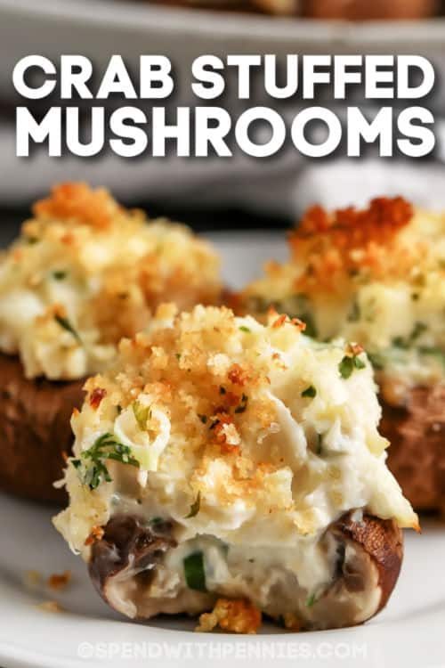

Stuffed Mushrooms (Inspired by Tiana)

Dish Description
Imitation crab, white and cheddar cheese, roasted in the oven with store bought egg's bendict sauce, a dish you won't forget!
Ingredients
- Imitation Crab
- White Cheese
- Cheddar Cheese
- Mushrooms
- Egg's bendict sauce (store bought)
Cooking Instructions
- Preheat oven to 6969F
- Pull out all mushroom stems
- Using a shredder, shred up all of your cheese
- Cut up all your crab into bite sized pieces
- Stuff mushrooms with crab, cheese, and dazzle the sauce ontop.
- Throw in over for 69 minutes, and BOOM. Enjoy!